푸른 눈의 책사 같은 웹툰 추천
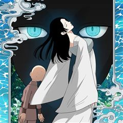
푸른 눈의 책사 · 골드키위새
푸른 눈의 책사 재밌게 봤다면 이 웹툰들도 좋아할 거예요. 같은 장르이면서 시대물 같은 요소가 겹치는 작품을, 겹치는 요소가 많은 순서로 20개 골랐어요.
2026-09-30 기준 · 네이버웹툰·카카오웹툰·레진코믹스 · 성인 작품 제외
내 취향으로 직접 골라 추천받기 →-
1
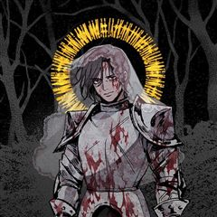
카카오웹툰록산
격동의 19세기 말, 귀족 셸 가문 남작 부부가 살해되고, 부모의 죽음으로 큰 충격과 실의에 빠진 아들 '막시밀리안'. 장례식을 치르고 돌아온 날 어머니가 고용한 신비롭지만 수상한 가정교사 '록산'을 만나는데... 마법을 사용하여 자신을 위험에서 구…
시대물무협드라마카카오웹툰에서 보기 → -
2
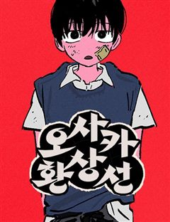
네이버웹툰오사카 환상선
오사카의 재일조선인 소년 김용은 우연히 야쿠자 조카와의 싸움에 휘말린다. 야쿠자의 명령으로 조선인 부락에 잠입해 신분증을 훔치는 임무를 맡게 된 김용. 평범해 보였던 마을 사람들은 무언가를 꾸미고 있는 듯 한데.. 처음에는 임무를 완수해 돈을 받을…
시대물무협드라마네이버웹툰에서 보기 → -
3
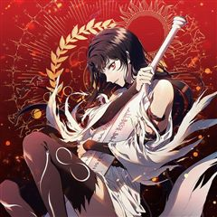
카카오웹툰드래곤 레이디
인간처럼 보이지만, 인간보다 강한 능력을 가진 존재, 씰. 세상 곳곳에 잠들어 있는 그들은 자신을 깨운 자에게 이름을 부여받고, 오직 그 사람을 지키기 위해서만 행동하는 신비로운 존재이다. 작은 어촌 마을의 평범한 요리사였던 줄리탄은 씰과 조우하고,…
시대물무협드라마카카오웹툰에서 보기 → -
4
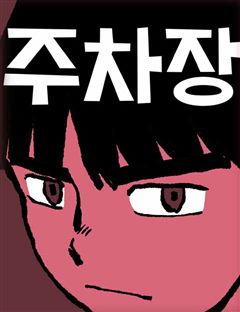
네이버웹툰주차장
강남 500평 노지 주차장을 상속을 놓고 벌어지는 주인공 선우와 곽영감의 치열한 심리게임. 피 한 방울 안 섞인 선우가 과연 곽영감의 주차장을 상속 받을 수 있을까?
시대물무협드라마네이버웹툰에서 보기 → -
5
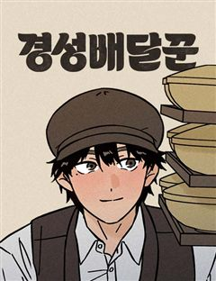
네이버웹툰경성배달꾼
배달 문화는 일제강점기 때도 있었다. 그런데… ‘이걸’ 배달하라고요? 1931년 경성, 인기 냉면집의 베테랑 배달부 태성. 어느 날 그릇에 숨겨진 밀서를 발견하며 평온했던 일상이 뒤틀린다. 위험한 의뢰, 경찰의 추적, 그 속에서 꿈틀거리는 감정들.…
시대물무협드라마네이버웹툰에서 보기 → -
6
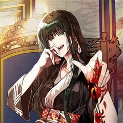
카카오웹툰궁궐의 맹수
자신의 능력이 비범함을 알고 있었으나 자신이 왕이 되지 못할 것을 알고 있던 공주는 시녀와 조용히 여생을 살고자 했다. 하지만 현국을 탐내는 주국의 음모가 판을 치고, 공주를 위협이라 느끼는 왕자는 공주의 시녀를 건드리고 시녀는 사라진다. 평생을 궁…
시대물무협드라마카카오웹툰에서 보기 → -
7
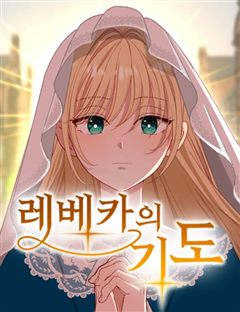
-
8
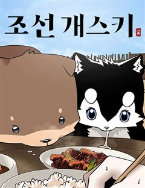
네이버웹툰조선 개스키
선천적으로 몸이 약한 폼스키 ‘베리’와 사람에게 마음을 닫은 고등학생 ‘요한’. 평소처럼 산책을 하던 중 갑작스러운 사고로 조선에 굴러떨어진다. 제주도 사투리가 구수한 전직 무관 척씨의 도움으로 머물 곳은 생겼지만, 요한은 하루빨리 현대로 돌아갈 방…
시대물무협드라마네이버웹툰에서 보기 → -
9
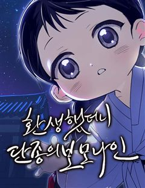
네이버웹툰환생했더니 단종의 보모나인
조선의 비극적 왕 단종 곁으로 환생한 여인, 뜻밖에 그의 보모가 되어버린다. 역사의 비극을 바꿀 기회 앞에서 그녀는 어린 군주를 지키기 위해 권력의 소용돌이에 맞서게 되는데…
시대물무협드라마네이버웹툰에서 보기 → -
10
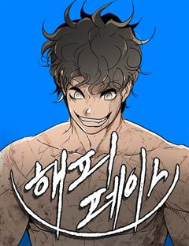
네이버웹툰해피 페이스
투기장에서 노예로 자란 해피는 괴물 같은 실력으로 생존해왔다. 투기장 주인이 사형되는 사건이 생기며 해방된 해피는 새로운 가족과 친구들을 만나며 조금씩 사회를 배워간다. 하지만 세상은 해피에게 싸움을 멈출 기회를 주지 않았다. 자신의 신분, 범죄와의…
시대물무협드라마네이버웹툰에서 보기 → -
11
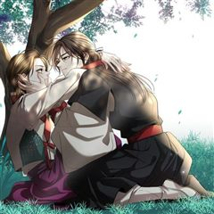
카카오웹툰비에 젖은 흔적들이다
그날 내가 잃어버린 것은 너일까, 나일까. 그리고 내가 다시 찾은 것은 나일까, 너일까. 아니면 우리일까. 14년 전 그날 홀로 남겨진 동경은 갈 길을 잃은 채 그 자리에 멈춰버렸다. 차가운 세상에 대한 믿음도 유대도 기대도 없다. 절망도 없다. 나…
시대물무협카카오웹툰에서 보기 → · 비에 젖은 흔적들이다 같은 웹툰 → -
12
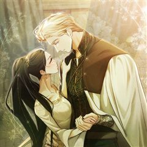
카카오웹툰타람 타람 타람
나긋나긋한 움직임으로 들어온 다온이 연회장 중앙에서 멈춰 섰다. 인형만큼이나 무미하고 감정 없는 얼굴이었다. 그럼에도 도도하고 우아해서 얼음 여왕처럼 강렬한 인상을 주었다. 엑서는 다리를 꼬며 낮게 웃었다. “지배자로서, 오늘 밤 널 안겠다.” 운명…
시대물무협카카오웹툰에서 보기 → -
13
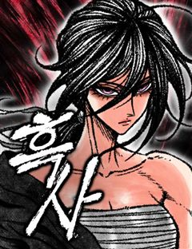
네이버웹툰흑사
마교와의 마지막 전투에서 무림맹에게 배신당해 모든 전우를 잃은 흑사대장 정화… 악착같이 살아남은 그녀는 맹세한다. 전우들을 죽음으로 몰아넣은 마교와 무림맹 모두 없애버리겠다고. ”하늘이시여! 정녕 대의가 살아있다면… 죽어간 전우들의 한을 씻어낼 기회…
시대물무협네이버웹툰에서 보기 → -
14
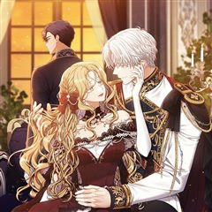
카카오웹툰나는 한 편의 극을 보았다
'심장은 여전히 그를 사랑한다고 말했지만, 머리는 그 사랑을 거부했다. 그것은 꽤나 묘한 기분이었다. 나지만 내가 아닌 느낌이었다.' 햇빛을 받아 금발처럼 보이는 금갈색 머리카락이 허리까지 내려와 굽실거렸다. 거울 안에는 반짝이는 짙은 녹색 눈동자를…
시대물무협카카오웹툰에서 보기 → -
15
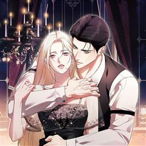
카카오웹툰처음이라 몰랐던 것들
위대한 시계 장인들의 딸이며 영웅, 빅토르 함장의 아내인 스칼렛 덤펠트. 그녀는 경찰청에서 취조를 받던 중, 빅토르의 왕실 복귀를 반대하는 자들에 의해 기억을 잃게 된다. "나가실 때쯤에는, 여기서 있었던 일을 기억하지 못하실 겁니다.” 사라진 일주…
시대물무협카카오웹툰에서 보기 → -
16
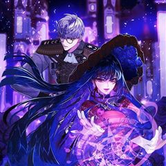
카카오웹툰공작가의 흑막 영애님
공작가의 사생아로 태어나 제국의 성녀가 된 에스텔레. 일평생 주변 이들을 사랑하려 노력했으나, 배신당해 악마에게 제물로 바쳐져 지옥에서 600년간 고통을 받았다. [복수할래?] [네가 원한다면, 저들이 가장 찬란히 빛나는 순간으로 보내줄게. 어때?]…
시대물무협카카오웹툰에서 보기 → -
17
 네이버웹툰
네이버웹툰시리도록 불꽃처럼
"강호로 내려가면 세상이 너의 적이 될 것이야..." 쇠락한 가문의 젊은 가주 '백무진'은 가세를 바로 잡기 위해 세상 밖으로의 여정을 준비한다. 세상은 그의 적이 될 것이라는 예견된 미래에도 불구하고, 무진은 외로운 싸움을 시작한다. <장씨세가 호…
시대물무협네이버웹툰에서 보기 → -
18
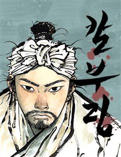
-
19
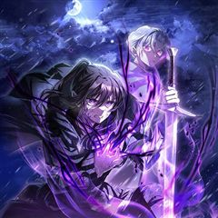
카카오웹툰헬무트
어둠의 싹을 가지고 태어난 아이, 헬무트. 태어나자마자 누구도 나오지 못하는 마물의 숲 '파헤'에 버려졌지만, 운 좋게 마물 '엘라가'에 의해 거두어진다. "이 숲은 나갈 수 없잖아." "나갈 수 있어. 내가 만난 인간이 그랬거든." "인간...?"…
시대물무협카카오웹툰에서 보기 → -
20
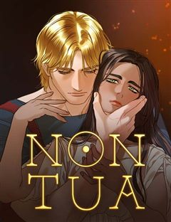
네이버웹툰논 투아
황제, 그리고 수천의 신을 섬기던 1세기의 로마 제국. 그 중 화로의 여신 베스타(Vesta)를 섬기는 신녀들이 있다. 처녀신 베스타를 따라 그 자신도 사내와 통정하지 말아야 하며, 이를 어길 시 지하에 파묻혀 죽게 되리라.
시대물무협네이버웹툰에서 보기 →